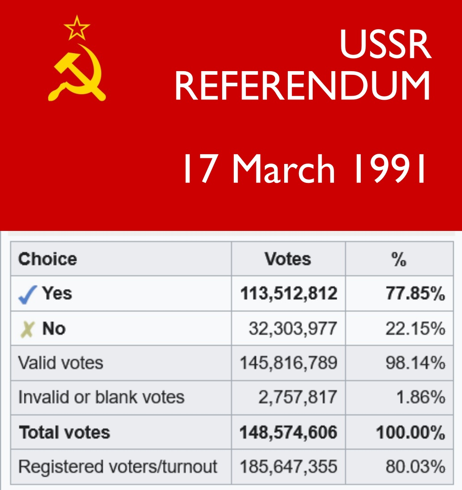

𝐀𝐬𝐡𝐥𝐞𝐲 𝐁𝐥𝐨𝐜𝐤🍥🌺🇹🇼🏳️⚧️🇪🇺
@bolckAshley
繃，這個公投的內容實際上是這樣的：
「您是否認為有必要保留蘇維埃社會主義共和國聯盟，使其成為一個由平等主權共和國組成的新的邦聯，在這個聯邦中，任何民族的個人的權利和自由都將得到充分保障？」
真以為大夥喜歡舊蘇聯啊，人家壓根就沒有那個意思，Tankie別斷章取義行不行😹

In Defense of Communism ©
@id_communism
📌 35 years since the 17 March 1991 referendum in the Soviet Union
The question was: "Do you consider it necessary to preserve the Union of Soviet Socialist Republics?"
🗳️The results:
Russian SFSR YES 70% NO 27%
Byelorussia YES 83.72% NO 16.28%
Ukrainian SSR https://t.co/YkZC8udG77